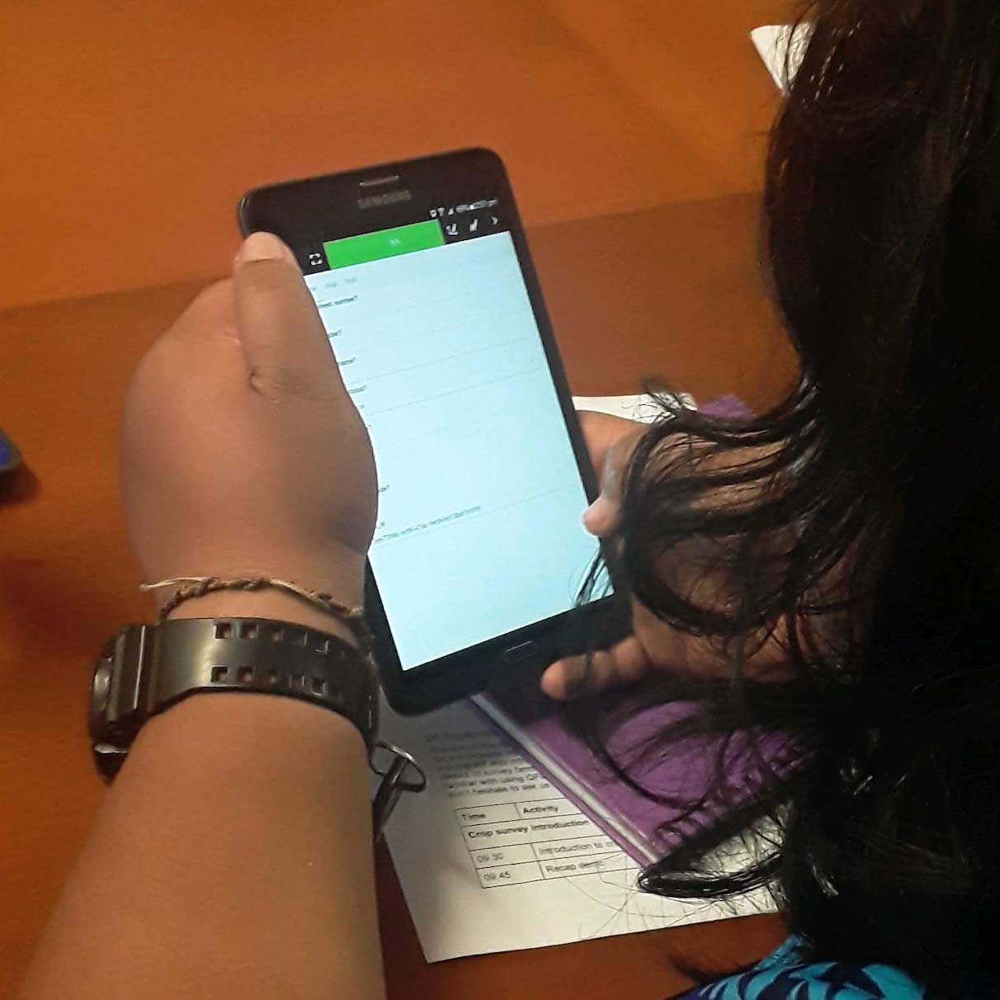
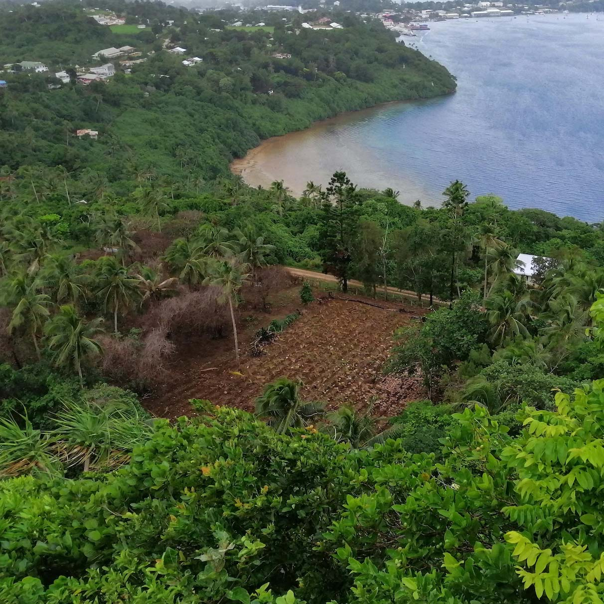
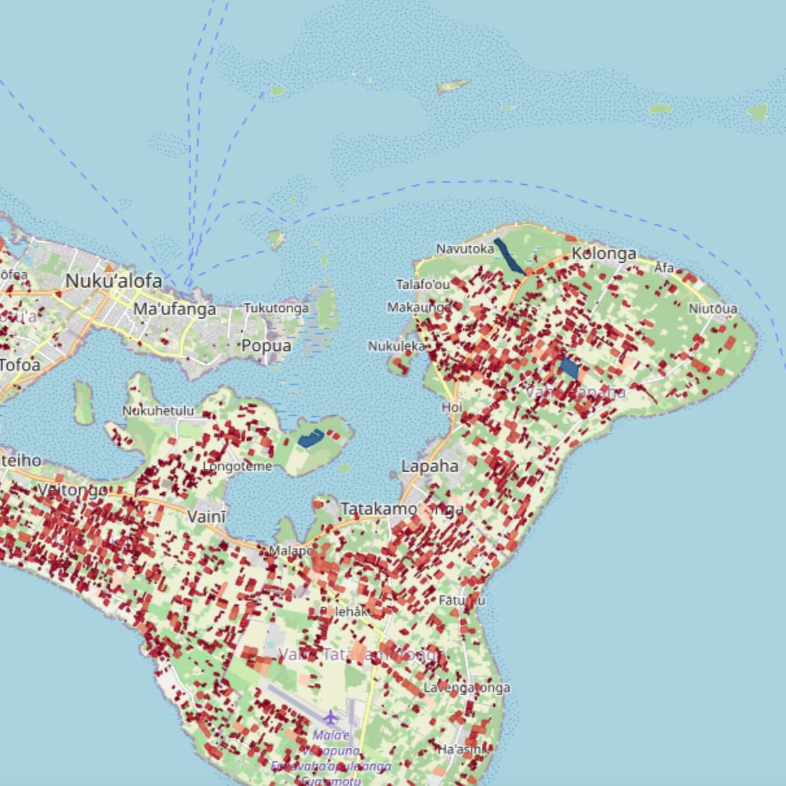
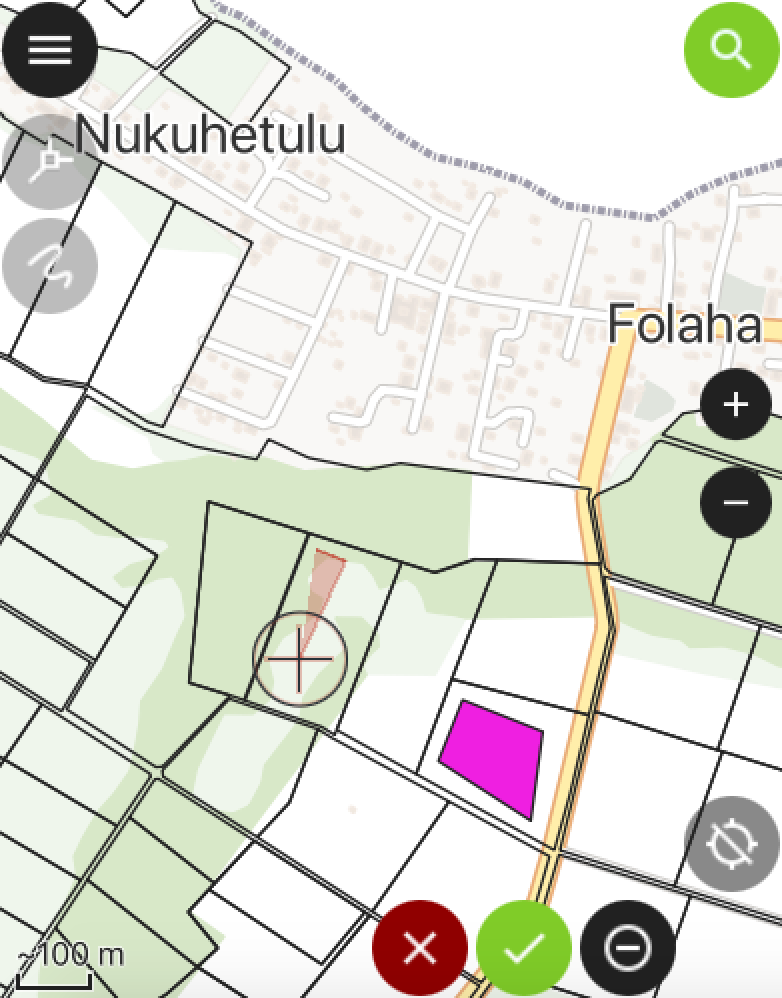

Welcome
maplandscape is a stack of open-source applications for mapping and monitoring diverse agricultural landscapes.
The workflow can be used for geospatial and non-spatial data collection tasks, large team data collection efforts, rapid mapping after disasters, and household surveys for monitoring programs and projects.
It is developed by a collaboration of agricultural landscape stakeholders and spatial scientists in Tonga, Fiji, and Australia. Funding and support was provided by the Australian Centre for International Agricultural Research through the Livelihoods and Landscapes project.
maplandscape has been widely used in Tonga with ongoing work in Fiji. Over 10,000 farms have been mapped across a range of applications including cropping systems monitoring to disaster response.

Building the capacity of landscape stakeholders to use geospatial technologies.

Generating datasets that reflect the condition of mixed land use systems.

Ensuring landscape data informs decision making.
Read the maplandscape paper presented at FOSS4G 2022 for all the details.
maplandscape
Open-source mobile, cloud, and desktop geospatial apps are used for data collection, analysis, and reporting tasks.
It was developed with Tonga’s Ministry of Agriculture, Food, and Forests to support their needs for capturing detailed information about farm and cropping systems.
Key features:
- Maps and forms for spatial and non-spatial data collection.
- On-mobile-device GIS querying and data entry.
- Complex form navigation and widgets for data entry.
- Online and offline data collection.
- GIS functionality in the field.
- Support for large team collaborative data collection.
- Security and user management tools.
- View field data on web maps, charts, and interactive tables.
- Automated reporting routines.
- Dashboard tools to quickly view and analyse spatial data.

Collect geospatial data in-the-field with QField.
Field data visualisation and analysis.
Learn: tutorials to learn how to use maplandscape for your data collection tasks.
Impact: read user stories about using maplandscape.
Data: see datasets collected using maplandscape on Pacific Data Hub.